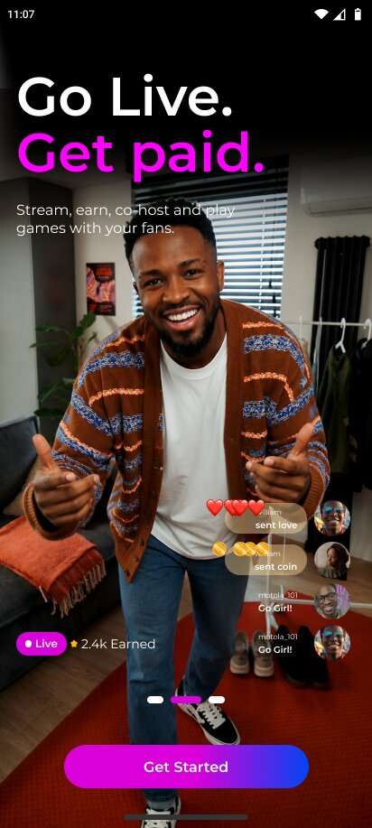
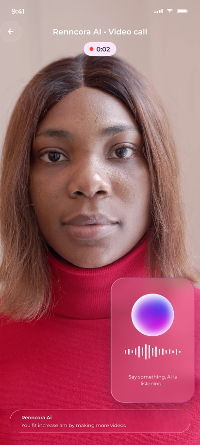
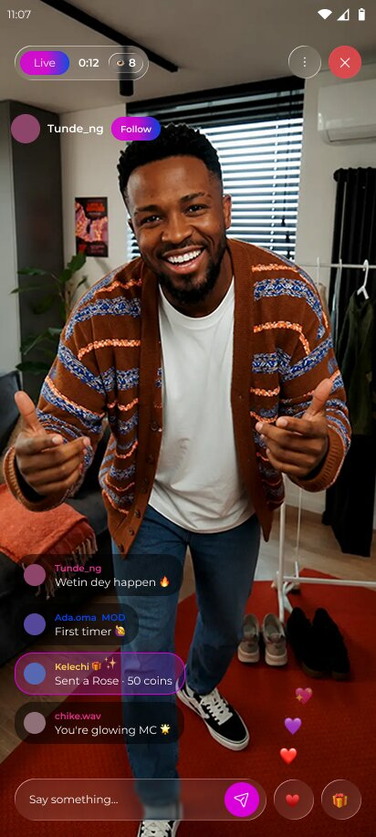

Renncora
Renncora is building the home for African creators: live streaming, community, and an AI assistant that speaks Nigerian Pidgin and English. I lead its product design, from the first screen to launch.
- Company
- Renncora
- Role
- Lead product design
- Platforms
- AI · Android & iOS
- Result
- Seven modules, one system, WCAG AA.
A live streaming and creator platform with a voice-first AI assistant that answers in Nigerian Pidgin and English.
As Lead Product Designer I designed seven modules and a design system from scratch, and shaped the AI around trust: what it heard, what it said, and what happens to a creator's voice and camera.
Onboarding



Clear listening states and live captions, so creators always see what the AI heard.


Recording is a visible choice, and the creator decides what is kept.



Live streaming



Design system


Seven modules, one system, WCAG AA.
Light and dark mode built into the tokens from day one.
An AI assistant designed around trust, consent and clear states.